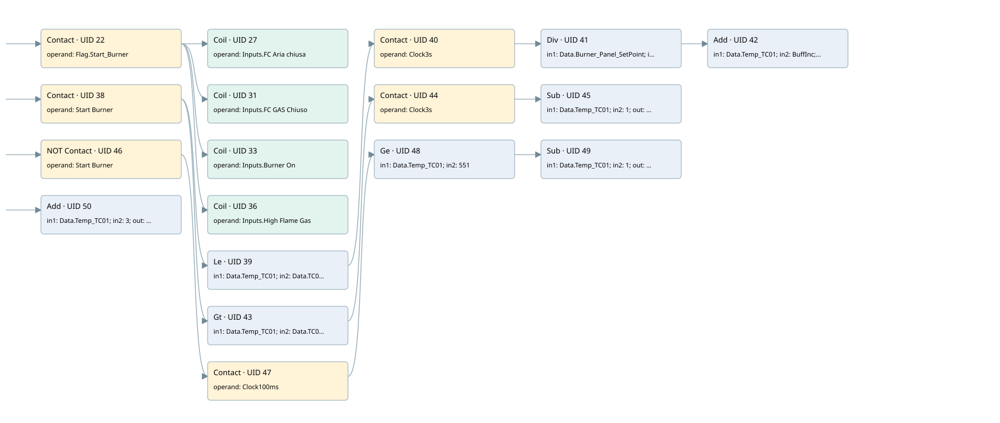

simulation
simulation · 검색 색인 순서 14 · 원본 내부 NID 추정 14
백업 PLF 원본의 3006139 바이트 위치에서 복원한 XML. 검색 문서 1092의 객체 키 16102200d738000000000000와 연결했다. 이름 해석 31/31개. 남은 RefId는 상수 또는 미해석 참조다.
연결 구조 다시 그리기
원본 Part/PCon/Wire를 이용한 연결도다. TIA 화면의 래더 배치 또는 실행 결과를 재현한 그림은 아니다. 핀 연결은 아래 표와 원본 XML을 기준으로 읽는다. 노드 위에 마우스를 두면 피연산자 이름을 볼 수 있다.

접점·코일·블록과 피연산자
| Part UID | Gate | Negated 핀 | 연결 피연산자 |
|---|---|---|---|
| 22 | Contact | operand = Flag.Start_Burner | |
| 27 | Coil | operand = Inputs.FC Aria chiusa | |
| 31 | Coil | operand = Inputs.FC GAS Chiuso | |
| 33 | Coil | operand = Inputs.Burner On | |
| 36 | Coil | operand = Inputs.High Flame Gas | |
| 38 | Contact | operand = Start Burner | |
| 39 | Le | in1 = Data.Temp_TC01; in2 = Data.TC01_SETPOINT | |
| 40 | Contact | operand = Clock3s | |
| 41 | Div | in1 = Data.Burner_Panel_SetPoint; in2 = 5; out = BuffInc | |
| 42 | Add | in1 = Data.Temp_TC01; in2 = BuffInc; out = Data.Temp_TC01 | |
| 43 | Gt | in1 = Data.Temp_TC01; in2 = Data.TC01_SETPOINT | |
| 44 | Contact | operand = Clock3s | |
| 45 | Sub | in1 = Data.Temp_TC01; in2 = 1; out = Data.Temp_TC01 | |
| 46 | Contact | operand | operand = Start Burner |
| 47 | Contact | operand = Clock100ms | |
| 48 | Ge | in1 = Data.Temp_TC01; in2 = 551 | |
| 49 | Sub | in1 = Data.Temp_TC01; in2 = 1; out = Data.Temp_TC01 | |
| 50 | Add | in1 = Data.Temp_TC01; in2 = 3; out = Data.Temp_TC02 |
접점 경로를 펼친 조건식
Contact·O/A·비교기의 원본 연결을 읽기 쉽게 펼친 보조 해석이다. POWER는 전원 레일 시작을 뜻한다. 호출 블록·에지·타이머의 내부 동작과 다중 쓰기 순서는 이 표로 실행 검증하지 않았다. 미해석 핀과 RefId는 원문 연결표에서 확인한다.
| UID | 동작 | 대상 | 원본 접점 경로 | 내용 |
|---|---|---|---|---|
| 27 | Coil | Inputs.FC Aria chiusa | Flag.Start_Burner | 조건에 따른 Coil 기록 |
| 31 | Coil | Inputs.FC GAS Chiuso | Flag.Start_Burner | 조건에 따른 Coil 기록 |
| 33 | Coil | Inputs.Burner On | Flag.Start_Burner | 조건에 따른 Coil 기록 |
| 36 | Coil | Inputs.High Flame Gas | Flag.Start_Burner | 조건에 따른 Coil 기록 |
원본 배선 연결
| Wire UID | 동일 Wire 연결 끝점 |
|---|---|
| 21 | Powerrail {} ↔ Part 22.in ↔ Part 38.in ↔ Part 46.in ↔ Part 50.en |
| 25 | ORef 23 (Flag.Start_Burner) ↔ Part 22.operand |
| 29 | Part 22.out ↔ Part 27.in ↔ Part 31.in ↔ Part 33.in ↔ Part 36.in |
| 26 | ORef 28 (Inputs.FC Aria chiusa) ↔ Part 27.operand |
| 30 | ORef 32 (Inputs.FC GAS Chiuso) ↔ Part 31.operand |
| 24 | ORef 34 (Inputs.Burner On) ↔ Part 33.operand |
| 35 | ORef 37 (Inputs.High Flame Gas) ↔ Part 36.operand |
| 78 | ORef 51 (Start Burner) ↔ Part 38.operand |
| 79 | Part 38.out ↔ Part 39.pre ↔ Part 43.pre |
| 80 | ORef 52 (Data.Temp_TC01) ↔ Part 39.in1 |
| 81 | ORef 53 (Data.TC01_SETPOINT) ↔ Part 39.in2 |
| 82 | Part 39.out ↔ Part 40.in |
| 83 | ORef 54 (Clock3s) ↔ Part 40.operand |
| 84 | Part 40.out ↔ Part 41.en |
| 85 | ORef 55 (Data.Burner_Panel_SetPoint) ↔ Part 41.in1 |
| 86 | ORef 56 (5) ↔ Part 41.in2 |
| 87 | Part 41.eno ↔ Part 42.en |
| 88 | Part 41.out ↔ ORef 57 (BuffInc) |
| 89 | ORef 58 (Data.Temp_TC01) ↔ Part 42.in1 |
| 90 | ORef 59 (BuffInc) ↔ Part 42.in2 |
| 91 | Part 42.out ↔ ORef 60 (Data.Temp_TC01) |
| 92 | ORef 61 (Data.Temp_TC01) ↔ Part 43.in1 |
| 93 | ORef 62 (Data.TC01_SETPOINT) ↔ Part 43.in2 |
| 94 | Part 43.out ↔ Part 44.in |
| 95 | ORef 63 (Clock3s) ↔ Part 44.operand |
| 96 | Part 44.out ↔ Part 45.en |
| 97 | ORef 64 (Data.Temp_TC01) ↔ Part 45.in1 |
| 98 | ORef 65 (1) ↔ Part 45.in2 |
| 99 | Part 45.out ↔ ORef 66 (Data.Temp_TC01) |
| 100 | ORef 67 (Start Burner) ↔ Part 46.operand |
| 101 | Part 46.out ↔ Part 47.in |
| 102 | ORef 68 (Clock100ms) ↔ Part 47.operand |
| 103 | Part 47.out ↔ Part 48.pre |
| 104 | ORef 69 (Data.Temp_TC01) ↔ Part 48.in1 |
| 105 | ORef 70 (551) ↔ Part 48.in2 |
| 106 | Part 48.out ↔ Part 49.en |
| 107 | ORef 71 (Data.Temp_TC01) ↔ Part 49.in1 |
| 108 | ORef 72 (1) ↔ Part 49.in2 |
| 109 | Part 49.out ↔ ORef 73 (Data.Temp_TC01) |
| 110 | ORef 74 (Data.Temp_TC01) ↔ Part 50.in1 |
| 111 | ORef 75 (3) ↔ Part 50.in2 |
| 112 | Part 50.out ↔ ORef 76 (Data.Temp_TC02) |
식별자 해석 근거 31개
| ORef UID | RefId | 이름 | IdentXmlPart 파일 | 해석 방법 |
|---|---|---|---|---|
| 23 | 223 | Flag.Start_Burner | 0635-IdentXmlPart.xml | UID/RID + search-text + NID agreement |
| 28 | 224 | Inputs.FC Aria chiusa | 0635-IdentXmlPart.xml | UID/RID + search-text + NID agreement |
| 32 | 225 | Inputs.FC GAS Chiuso | 0635-IdentXmlPart.xml | UID/RID + search-text + NID agreement |
| 34 | 244 | Inputs.Burner On | 0635-IdentXmlPart.xml | UID/RID + search-text + NID agreement |
| 37 | 246 | Inputs.High Flame Gas | 0635-IdentXmlPart.xml | UID/RID + search-text + NID agreement |
| 51 | 286 | Start Burner | 0636-IdentXmlPart.xml | UID/RID + search-text + NID agreement |
| 52 | 287 | Data.Temp_TC01 | 0635-IdentXmlPart.xml | UID/RID + search-text + NID agreement |
| 53 | 288 | Data.TC01_SETPOINT | 0635-IdentXmlPart.xml | UID/RID + search-text + NID agreement |
| 54 | 285 | Clock3s | 0636-IdentXmlPart.xml | UID/RID + search-text + NID agreement |
| 55 | 289 | Data.Burner_Panel_SetPoint | 0635-IdentXmlPart.xml | UID/RID + search-text + NID agreement |
| 56 | 290 | 5 | 0637-IdentXmlPart.xml | literal candidate: UID/RID/NID + nearby named declarations + search-text agreement |
| 57 | 291 | BuffInc | 0065-IdentXmlPart.xml | UID/RID + search-text + NID agreement |
| 58 | 287 | Data.Temp_TC01 | 0635-IdentXmlPart.xml | UID/RID + search-text + NID agreement |
| 59 | 291 | BuffInc | 0065-IdentXmlPart.xml | UID/RID + search-text + NID agreement |
| 60 | 287 | Data.Temp_TC01 | 0635-IdentXmlPart.xml | UID/RID + search-text + NID agreement |
| 61 | 287 | Data.Temp_TC01 | 0635-IdentXmlPart.xml | UID/RID + search-text + NID agreement |
| 62 | 288 | Data.TC01_SETPOINT | 0635-IdentXmlPart.xml | UID/RID + search-text + NID agreement |
| 63 | 285 | Clock3s | 0636-IdentXmlPart.xml | UID/RID + search-text + NID agreement |
| 64 | 287 | Data.Temp_TC01 | 0635-IdentXmlPart.xml | UID/RID + search-text + NID agreement |
| 65 | 249 | 1 | 0637-IdentXmlPart.xml | literal candidate: UID/RID/NID + nearby named declarations + search-text agreement |
| 66 | 287 | Data.Temp_TC01 | 0635-IdentXmlPart.xml | UID/RID + search-text + NID agreement |
| 67 | 286 | Start Burner | 0636-IdentXmlPart.xml | UID/RID + search-text + NID agreement |
| 68 | 263 | Clock100ms | 0636-IdentXmlPart.xml | UID/RID + search-text + NID agreement |
| 69 | 287 | Data.Temp_TC01 | 0635-IdentXmlPart.xml | UID/RID + search-text + NID agreement |
| 70 | 365 | 551 | 0637-IdentXmlPart.xml | literal candidate: UID/RID/NID + nearby named declarations + search-text agreement |
| 71 | 287 | Data.Temp_TC01 | 0635-IdentXmlPart.xml | UID/RID + search-text + NID agreement |
| 72 | 249 | 1 | 0637-IdentXmlPart.xml | literal candidate: UID/RID/NID + nearby named declarations + search-text agreement |
| 73 | 287 | Data.Temp_TC01 | 0635-IdentXmlPart.xml | UID/RID + search-text + NID agreement |
| 74 | 287 | Data.Temp_TC01 | 0635-IdentXmlPart.xml | UID/RID + search-text + NID agreement |
| 75 | 362 | 3 | 0637-IdentXmlPart.xml | literal candidate: UID/RID/NID + nearby named declarations + search-text agreement |
| 76 | 292 | Data.Temp_TC02 | 0635-IdentXmlPart.xml | UID/RID + search-text + NID agreement |
검색 코드 보조 자료
참조 명칭을 찾기 위한 자료이며 실행 순서나 AND/OR 관계는 위 연결표로 확인한다.
"flag".start_burner "inputs"."fc aria chiusa" "start burner" "data".temp_tc01 "data".tc01_setpoint "clock3s" div "data".burner_panel_setpoint 5 add "data".temp_tc01 #buffinc "data".temp_tc01 "data".tc01_setpoint "clock3s" sub "data".temp_tc01 1 "data".temp_tc01 #buffinc "data".temp_tc01 "start burner" "clock100ms" "data".temp_tc01 551 sub "data".temp_tc01 1 "data".temp_tc01 add "data".temp_tc01 3 "data".temp_tc02 "inputs"."fc gas chiuso" "inputs"."burner on" "inputs"."high flame gas"